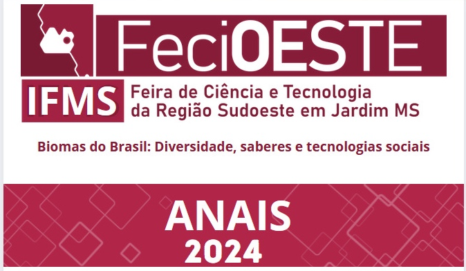

FEIRA DE CIÊNCIA E TECNOLOGIA DA REGIÃO SUDOESTE DO MATO GROSSO DO SUL
FECIOESTE 2024
APRESENTAÇÃO
A Feira de Ciência e Tecnologia de Campo Grande – FECINTEC 2021, organizada pelo Campus Campo Grande, será
realizada nos dias 04 e 05/10/2021, com apoio do Conselho Nacional de Desenvolvimento Científico e Tecnológico (CNPq),
Secretaria Municipal de Educação de Campo Grande (SEMED), Secretaria de Estado de Educação de Mato Grosso do Sul - (SED-MS),
Grupo Arandú e Universidade Federal de Mato Grosso do Sul (UFMS).
A FECINTEC está em sua 8ª edição. Desde 2014 seleciona trabalhos de Iniciação Científica dos estudantes
das escolas públicas e privadas dos municípios contidos na área de abrangência do Campus Campo Grande
para apresentação para a comunidade. Neste ano contamos mais uma vez com a participação da comunidade
educacional da nossa região para fazer da FECINTEC um sucesso.
Todos os participantes dos projetos receberão certificados.
Os trabalhos melhor classificados, de cada área do conhecimento, serão premiados com certificados, medalhas, troféus e credenciais para participar de outros eventos científicos (FETEC-MS e FEBRACE).
Para essa oitava edição, foram selecionados 91 trabalhos. Os textos, em formato de resumo expandido, apresentam os resultados alcançados por projetos de pesquisa científica e/ou tecnológica já concluídos ou com resultados parciais, desenvolvidos por estudantes da educação básica, com orientação de até dois professores. Todos os trabalhos apresentados nestes anais foram previamente avaliados e aprovados pela comissão científica constituída por avaliadores online.
Os trabalhos melhor classificados, de cada área do conhecimento, serão premiados com certificados, medalhas, troféus e credenciais para participar de outros eventos científicos (FETEC-MS e FEBRACE).
Para essa oitava edição, foram selecionados 91 trabalhos. Os textos, em formato de resumo expandido, apresentam os resultados alcançados por projetos de pesquisa científica e/ou tecnológica já concluídos ou com resultados parciais, desenvolvidos por estudantes da educação básica, com orientação de até dois professores. Todos os trabalhos apresentados nestes anais foram previamente avaliados e aprovados pela comissão científica constituída por avaliadores online.
COMISSÃO DA SEMANA DA CIÊNCIA E TECNOLOGIA - SCT e COMISSÃO DE ORGANIZAÇÃO DA FECIOESTE - 2024
PORTARIA Nº 77 DE 22 DE AGOSTO DE 2024
Danilo Souza Melo
Antônio de Freitas Neto
Valéria Sun Hwa Mazucato Galvão
Priscila do Nascimento Ribeiro Rezende
Rodrigo Martins de Almeida
Raphael Martins
Catarina Guerchi Nunes
Andre Quintiliano Bezerra Silva
Adelson Candido Mesquita
Vinicius Bozzano Nunes
Tiago Antunes
Yujuan Wang
Raiane Gomes dos Santos Delfino
Ewerton da Silva Schroeder
Patrik Ola Bressan
Silvio Mendes Mazarin
Leandro Aparecido Antunes Steffen
Laila Cristina Domingos
Silvia Cristina de Freitas Cidrao
Maria Luísa da Costa Marques
Moacir Juliani
Heyder Vagner Ramos
Laurene Colares Pereira dos Santos
APOIADORES DA FECIOESTE 2024

ANAIS DA FECIOESTE 2024 – FEIRA DE CIÊNCIA E TECNOLOGIA DA REGIÃO SUDOESTE DO MATO GROSSO DO SUL
Ensino Fundamental
Ciências Humanas; Social Aplicadas e Linguística e Artes - CHSAL
Autores:
Título: Bela Vista e a Rota Bioceânica: Caminhos para o Futuro
Título: Soletrando em Libras
Título: Criando narrativas em quadrinhos em formato digital SCRATCH
Título: Clube da Leitura Exploradores Literários e o uso da tecnologia para incentivar a leitura
Título: Produção de Fertilizantes com água de tanques de peixes Sisteminha Áquasolo
Título: Projeto veículo robô, filhote taturana
Título: Robótica nas aulas de Ciências: Fomentando o aprendizado ativo e a formação de alunos monitores
Título: Formação de palavras por meio de alfabeto Manual em Libras e Citologia em Libras
Título: Meio Ambiente: Trabalhando a sustentabilidade de forma multidisciplinar
Título: Terrários: um pedacinho da natureza autossustentável
Título: Bela Vista e a Rota Bioceânica: Caminhos para o Futuro
(pdf)
Autores: Título: Soletrando em Libras
(pdf)
Autores: Título: Criando narrativas em quadrinhos em formato digital SCRATCH
(pdf)
Autores: Título: Clube da Leitura Exploradores Literários e o uso da tecnologia para incentivar a leitura
(pdf)
Ciências Exatas e da Terra - CET
Autores: Título: Produção de Fertilizantes com água de tanques de peixes Sisteminha Áquasolo
(pdf)
Autores: Título: Projeto veículo robô, filhote taturana
(pdf)
Autores: Título: Robótica nas aulas de Ciências: Fomentando o aprendizado ativo e a formação de alunos monitores
(pdf)
Multidisciplinar - MDIS
Autores: Título: Formação de palavras por meio de alfabeto Manual em Libras e Citologia em Libras
(pdf)
Autores: Título: Meio Ambiente: Trabalhando a sustentabilidade de forma multidisciplinar
(pdf)
Autores: Título: Terrários: um pedacinho da natureza autossustentável
(pdf)
Ensino Médio
Ciências Agrárias e Engenharias - CAE
Autores:
Título: Formação de mudas de alface crespa em diferentes substrato de semeadura
Título: Produtividade do BRS Capiaçu e propriedade física e química do solo em função da adubação orgânica e mineral
Título: Efeitos combinados de irrigação por gotejamento e cobertura de solo sobre a produção de hortaliças no Mato Grosso do Sul
Título: Manejo integrado de pragas e doenças na cultura da alface crespa para a redução do uso de agrotóxicos
Título: Efeito da adubação nitrogenada sobre a produção de matéria seca do capim BRS capiaçu (Pennisetum Purpureum Schum)
Título: Redução do desperdício de recursos hídricos no cultivo de hortaliças por meio do sistema inteligente de irrigação por gotejamento
Título: Efeito da adubação fosfatada inicial do cultivar BRS Capiaçu
Título: A população de papagaios verdadeiros (Amazona aestiva) no Município de Jardim/MS: conhecer para preservar
Título: Missão EMTI: Lançamento de Foguete Pressurizado
Título: Um olhar para o Rio Santo Antônio a partir da Educação Ambiental
Título: A ADEQUAÇÃO SUSTENTÁVEL NO PROCESSO DA CONSTRUÇÃO CIVIL
Título: ASTROEXP: SIMULAÇÕES COMPUTACIONAIS COMO UMA PROPOSTA ALTERNATIVA PARA A DIVULGAÇÃO DA ASTRONOMIA NAS ESCOLAS.
Título: CIRCUITO HORTO INTERATIVO
Título: CONHECENDO A DIVERSIDADE CULTURAL E LINGUÍSTICA A PARTIR DE PODCASTS: DISCUTINDO RESULTADOS
Título: CRIAÇÃO DE CONTEÚDO DIGITAL A PARTIR DOS ENCONTROS DE CONVERSAÇÃO LET’S BORA
Título: LUTO INFANTIL: ASPECTOS E INTERVENÇÕES
Título: MAPEAMENTO DOS PONTOS DE ÔNIBUS DE CAMPO GRANDE - MS
Título: O ENSINO DO ESPANHOL NO ENSINO MÉDIO TÉCNICO INTEGRADO: UM ESTUDO INICIAL SOBRE A PERCEPÇÃO E A RELEVÂNCIA DO IDIOMA PARA A COMUNIDADE INTERNA
Título: REFLEXOS DO TRABALHO ANÁLOGO À ESCRAVIDÃO NOS DIAS ATUAIS
Título: VIOLÊNCIA, ABANDONO, FALTA DE FISCALIZAÇÃO: O QUE AS PRAÇAS PÚBLICAS SE TORNARAM PARA SOCIEDADE?
Título: CONSTRUÇÃO DE UM CANAL NO YOUTUBE PARA A DIVULGAÇÃO DE RESENHAS DE OBRAS LITERÁRIAS MAIS RECORRENTES NOS VESTIBULARES BRASILEIROS
Título: EDUCAÇÃO QUE ALIMENTA O CORPO E A ALMA: CRIAÇÃO DE SITE SOLIDÁRIO COMO PRÁTICA PEDAGÓGICA
Título: ENGLISH CLUB: BUSCANDO CAMINHOS DE INCLUSÃO EM TEMPOS DE INTERNACIONALIZAÇÃO
Título: MÉTODO TRADICIONAL DE ENSINO E MÉTODO LÚDICO: O USO DE METODOLOGIAS EDUCACIONAIS ALTERNATIVAS NO COMBATE AO ABANDONO ESCOLAR
Título: NUAR E O PROCESSO CRIATIVO DE ESCRITA PARA A CONSTRUÇÃO DE ANIMATICS EM ANIMAÇÕES 2D
Título: NUAR: ENTRE NARRATIVAS E ILUSTRAÇÕES E AS GRANDE HISTÓRIAS DE MULHERES QUE FIZERAM TECNOLOGIA PELO MUNDO
Título: PROPOSTA DE GAMIFICAÇÃO PARA O ENSINO: AULA SHOW
Título: PULSEIRA PARA OTIMIZAR A TRAVESSIA DE RUA DOS DEFICIENTES VISUAIS
Título: VOZ DA GALERA: UTILIZAÇÃO DO PODCAST COMO FERRAMENTA MOTIVACIONAL
Título: ÁGUA DE BEBER: UMA ANÁLISE QUALITATIVA SOBRE OS EFEITOS DA EXCLUSÃO SOCIAL NO CONSUMO DE ÁGUA EM COMUNIDADES CARENTES.
Título: AIGA: SUPORTE TECNOLÓGICO EDUCACIONAL DE COMPARTILHAMENTO E APRENDIZAGEM ESCOLAR
Título: O HOMEM UNIVERSAL: UTILIZAÇÃO DE METODOLOGIAS ATIVAS DE APRENDIZAGEM COM BASE NOS ESTUDOS SOBRE LEONARDO DA VINCI
Título: OS DESAFIOS DA SÍNDROME DE TOURETTE EM SALA DE AULA
Título: BOLETIM TÉCNICO DO PROJETO MEDALHA: PROCESSO DE ELABORAÇÃO E PRINCIPAIS RESULTADOS
Título: CORREDOR RODOVIÁRIO BIOCEÂNICO: NOVOS DESAFIOS PARA O ESTADO DE MATO GROSSO DO SUL IMPACTANDO EM QUALIFICAÇÃO E FORMAÇÃO DE MÃO DE OBRA PARA O SETOR TURÍSTICO
Título: DANCE EM CASA: BEM-ESTAR E SAÚDE EM PERÍODO PANDÊMICO
Título: DIFUSÃO DA CULTURA MAKER E SUA APLICAÇÃO NA QUÍMICA: ESTUDOS PRELIMINARES
Título: DISPOSITIVO PARA CONTENÇÃO DE PEQUENOS ANIMAIS
Título: FERRAMENTA DE DENÚNCIA AO BULLYING: UMA VISÃO AMPLIFICADA DO BULLYING E COMO EVITÁ-LO
Título: FERRAMENTAS DE GAMIFICAÇÃO PARA AULAS UTILIZANDO A CULTURA MAKER
Título: GAME IMPACT GREEN: GAMEFICAÇÃO E A EDUCAÇÃO AMBIENTAL COMO ESTRAGÉGIA EDUCATIVA
Título: MINHA HARMONIA: UMA FERRAMENTA DE APOIO NO APRENDIZADO MUSICAL
Título: NO PLAY NO GAIN: TECNOLOGIA E ATIVIDADE FÍSICA NA EDUCAÇÃO FÍSICA ESCOLAR
Título: O CORREDOR RODOVIÁRIO BIOCEÂNICO E A NECESSIDADE DE FORMAÇÃO DO CAPITAL HUMANO
Título: O FENÔMENO ESPORTS NO ESPAÇO DA EDUCAÇÃO PROFISSIONAL E TECNOLÓGICA: TRAÇANDO UM PERFIL DA COMUNIDADE GAMER DO IFMS
Título: PANDA - PROGRAMA DE ACOMPANHAMENTO E NOTIFICAÇÃO PARA DOJOS E ATIVIDADES
Título: PAPEL SEMENTE: ALTERNATIVA SUSTENTÁVEL DE ENFRENTAMENTO À INSEGURANÇA ALIMENTAR
Título: PLATAFORMA DE WEB INFORMATIVA SOBRE RELIGIÕES DE DIVERSAS ORIGENS, COM ÊNFASE NAS RELIGIÕES DE MATRIZES AFRICANAS
Título: SENSOR DE EMOÇÕES PARA GAMIFICAÇÃO
Título: SMART PROT – DESENVOLVIMENTO DE UMA PRÓTESE QUE ACOMPANHA O CRESCIMENTO DO PACIENTE – ETAPA 1: REVISÃO DA LITERATURA
Título: VOCÊ SABE O QUE ESTÁ COMENDO?
Título: Formação de mudas de alface crespa em diferentes substrato de semeadura
(pdf)
Autores: Título: Produtividade do BRS Capiaçu e propriedade física e química do solo em função da adubação orgânica e mineral
(pdf)
Autores: Título: Efeitos combinados de irrigação por gotejamento e cobertura de solo sobre a produção de hortaliças no Mato Grosso do Sul
(pdf)
Autores: Título: Manejo integrado de pragas e doenças na cultura da alface crespa para a redução do uso de agrotóxicos
(pdf)
Autores: Título: Efeito da adubação nitrogenada sobre a produção de matéria seca do capim BRS capiaçu (Pennisetum Purpureum Schum)
(pdf)
Autores: Título: Redução do desperdício de recursos hídricos no cultivo de hortaliças por meio do sistema inteligente de irrigação por gotejamento
(pdf)
Autores: Título: Efeito da adubação fosfatada inicial do cultivar BRS Capiaçu
(pdf)
Ciências Biológicas e da Saúde - CBS
Autores: Título: A população de papagaios verdadeiros (Amazona aestiva) no Município de Jardim/MS: conhecer para preservar
(pdf)
Autores: Título: Missão EMTI: Lançamento de Foguete Pressurizado
(pdf)
Autores: Título: Um olhar para o Rio Santo Antônio a partir da Educação Ambiental
(pdf)
Ciências Exatas e da Terra
Autores: Fernando Maciel Rosa; Maria Eduarda Schneider Vidal; Meiriélly Maciel Moreira; Danielle Boin Borges; Matheus Vyctor Aranda EspíndolaTítulo: A ADEQUAÇÃO SUSTENTÁVEL NO PROCESSO DA CONSTRUÇÃO CIVIL
(pdf)
Autores: Isabela Pereira Gregio; Adriano Gonçalves MaliukTítulo: ASTROEXP: SIMULAÇÕES COMPUTACIONAIS COMO UMA PROPOSTA ALTERNATIVA PARA A DIVULGAÇÃO DA ASTRONOMIA NAS ESCOLAS.
(pdf)
Ciências Humanas, Sociais Aplicadas e Linguística
Autores: Larissa Palácios Ferras Torres; Natan Alexandre Penteado; Victor Adriano De Sá Silva; Flávia Barros De Andrade; Edgar Dos Santos GomesTítulo: CIRCUITO HORTO INTERATIVO
(pdf)
Autores: Alice Melo Ribeiro; Nivia Da Silva Rucker; Beatriz Aparecida AlencarTítulo: CONHECENDO A DIVERSIDADE CULTURAL E LINGUÍSTICA A PARTIR DE PODCASTS: DISCUTINDO RESULTADOS
(pdf)
Autores: Luis Guilherme Miranda Spengler; Mariana Vargas Lopes; Natanael Ribeiro Teixeira; Fernanda Belarmino De Santana Scaini; Letícia Barbosa Da Silva CavalcanteTítulo: CRIAÇÃO DE CONTEÚDO DIGITAL A PARTIR DOS ENCONTROS DE CONVERSAÇÃO LET’S BORA
(pdf)
Autores: Mauricio Szczypior Marin; João Victor Rezende Costa; Danielle Boin Borges; Valeska Barros Da CruzTítulo: LUTO INFANTIL: ASPECTOS E INTERVENÇÕES
(pdf)
Autores: Danilo Olivio Uliana Benevides; Beatriz Emanuela Pawlowski Barreto; Vinicius De Menezes Bretschnaider; Andrerika Vieira Lima SilvaTítulo: MAPEAMENTO DOS PONTOS DE ÔNIBUS DE CAMPO GRANDE - MS
(pdf)
Autores: Beatrice Fernanda Martins Brixner; João Rian Goes De Oliveira; Beatriz Aparecida AlencarTítulo: O ENSINO DO ESPANHOL NO ENSINO MÉDIO TÉCNICO INTEGRADO: UM ESTUDO INICIAL SOBRE A PERCEPÇÃO E A RELEVÂNCIA DO IDIOMA PARA A COMUNIDADE INTERNA
(pdf)
Autores: Isabela Souza Rezende Caramalac; Isadora Estodutto Da Silva De Menezes; Yasmim Comyama Saldanha; Flávia Barros De Andrade; Edgar Dos Santos GomesTítulo: REFLEXOS DO TRABALHO ANÁLOGO À ESCRAVIDÃO NOS DIAS ATUAIS
(pdf)
Autores: Ana Clara Gomes De Luna; Carlos Cesar Gonzalez De Luna; Edinéia Leite Dos S. OliveiraTítulo: VIOLÊNCIA, ABANDONO, FALTA DE FISCALIZAÇÃO: O QUE AS PRAÇAS PÚBLICAS SE TORNARAM PARA SOCIEDADE?
(pdf)
Autores: Jéssica Gonçalez Ribeiro; Adriane Brito De Brum; Gabriel Augusto Da Silva Leal; Arnaldo Pinheiro Mont'alvão Junior; Isaias Leonidio FariasTítulo: CONSTRUÇÃO DE UM CANAL NO YOUTUBE PARA A DIVULGAÇÃO DE RESENHAS DE OBRAS LITERÁRIAS MAIS RECORRENTES NOS VESTIBULARES BRASILEIROS
(pdf)
Autores: Emanuele Ferraz Barbosa; Beatriz Dos Santos Maria; Júlia Nery Cruz; Tatiana Gonçalves De Lima; Aparecida Penha Lima De SantanaTítulo: EDUCAÇÃO QUE ALIMENTA O CORPO E A ALMA: CRIAÇÃO DE SITE SOLIDÁRIO COMO PRÁTICA PEDAGÓGICA
(pdf)
Autores: João Pedro Haufes; Luís Guilherme Miranda Spengler; Raquel Braiani Pinheiro; Letícia Barbosa Da Silva Cavalcante; Flávio Amorim Da RochaTítulo: ENGLISH CLUB: BUSCANDO CAMINHOS DE INCLUSÃO EM TEMPOS DE INTERNACIONALIZAÇÃO
(pdf)
Autores: Jorge Henrique Genoves Alves Avelino; Carlos Cesar Gonzalez De LunaTítulo: MÉTODO TRADICIONAL DE ENSINO E MÉTODO LÚDICO: O USO DE METODOLOGIAS EDUCACIONAIS ALTERNATIVAS NO COMBATE AO ABANDONO ESCOLAR
(pdf)
Autores: Bárbara Celsiane De Castro Pinheiro; João Rian Goes De Oliveira; Lucas Guimarães Lopes; Marta Luzzi; Cláudia Santos FernandesTítulo: NUAR E O PROCESSO CRIATIVO DE ESCRITA PARA A CONSTRUÇÃO DE ANIMATICS EM ANIMAÇÕES 2D
(pdf)
Autores: Ariadne Nicoly Mori De Paula; Bianca Fernandes Ribas; Cláudia Santos Fernandes; Marta LuzziTítulo: NUAR: ENTRE NARRATIVAS E ILUSTRAÇÕES E AS GRANDE HISTÓRIAS DE MULHERES QUE FIZERAM TECNOLOGIA PELO MUNDO
(pdf)
Autores: Felipe Souza Do Nascimento; Aaron Levi Dos Santos Palma; João Pedro De Oliveira Caetano; Marilyn Aparecida Errobidarte De Matos; Rhasla Ramos Abrão WanderleyTítulo: PROPOSTA DE GAMIFICAÇÃO PARA O ENSINO: AULA SHOW
(pdf)
Autores: Maria Eduarda Alves Barbosa; Mariane Lima Megliato; Wesley Eiji Sanches Kanashiro; Celio Gianelli PinheiroTítulo: PULSEIRA PARA OTIMIZAR A TRAVESSIA DE RUA DOS DEFICIENTES VISUAIS
(pdf)
Autores: Davi Leonardo Gonçalves De Lima; Gilvan José Fernando De Jesus; Yasmin Saber Bairros; Tatiana Gonçalves De Lima; Jane Dos Santos Flores PadilhaTítulo: VOZ DA GALERA: UTILIZAÇÃO DO PODCAST COMO FERRAMENTA MOTIVACIONAL
(pdf)
Multidisciplinar
Autores: Larissa Ferrarini T. V. De A; Carlos Cesar Gonzalez De Luna; Gislene Figueiredo Ortiz PorangabaTítulo: ÁGUA DE BEBER: UMA ANÁLISE QUALITATIVA SOBRE OS EFEITOS DA EXCLUSÃO SOCIAL NO CONSUMO DE ÁGUA EM COMUNIDADES CARENTES.
(pdf)
Autores: Francisco Yuki Ishikiriyama; Gabriel Fernandes Bueno; Hillary Avlis Chela; Gracy Kelly Da Costa Oliveira; Ana Paula Floriano SantosTítulo: AIGA: SUPORTE TECNOLÓGICO EDUCACIONAL DE COMPARTILHAMENTO E APRENDIZAGEM ESCOLAR
(pdf)
Autores: Eduardo Miranda Lima; Eduardo Moura Ventorim; Ester Tainã Rodrigues; Thiago Gonçalves De AlmeidaTítulo: O HOMEM UNIVERSAL: UTILIZAÇÃO DE METODOLOGIAS ATIVAS DE APRENDIZAGEM COM BASE NOS ESTUDOS SOBRE LEONARDO DA VINCI
(pdf)
Autores: Nathália Angelo Paschoarello; Danielle Boin Borges; Valeska Barros Da CruzTítulo: OS DESAFIOS DA SÍNDROME DE TOURETTE EM SALA DE AULA
(pdf)
Autores: Ana Baetriz Moto; Kayky Torres Esteves; Jiyan Yari; Christianne De Faria Coelho RavagnaniTítulo: BOLETIM TÉCNICO DO PROJETO MEDALHA: PROCESSO DE ELABORAÇÃO E PRINCIPAIS RESULTADOS
(pdf)
Autores: Yasmin Cambará Marafon; Edilene Maria De OliveiraTítulo: CORREDOR RODOVIÁRIO BIOCEÂNICO: NOVOS DESAFIOS PARA O ESTADO DE MATO GROSSO DO SUL IMPACTANDO EM QUALIFICAÇÃO E FORMAÇÃO DE MÃO DE OBRA PARA O SETOR TURÍSTICO
(pdf)
Autores: Luiz Eduardo Paes Taveira; Matheus Nathan De Araujo Martinez; Clarissa Gomes Pinheiro De SáTítulo: DANCE EM CASA: BEM-ESTAR E SAÚDE EM PERÍODO PANDÊMICO
(pdf)
Autores: Clara Mudo De Araujo; Sophya Martins Ribeiro; Rhasla Ramos Abrão Wanderley; Tatiane Alfonso De AraujoTítulo: DIFUSÃO DA CULTURA MAKER E SUA APLICAÇÃO NA QUÍMICA: ESTUDOS PRELIMINARES
(pdf)
Autores: Gabriel Fernando De Faria Ferreira; Júlia Perondi Nágera; Matheus Piazzalunga Neivock; Fabrício Cesar De Paula RavagnaniTítulo: DISPOSITIVO PARA CONTENÇÃO DE PEQUENOS ANIMAIS
(pdf)
Autores: João Rian Goes De Oliveira; Mayara Dos Santos Teixeira; Laryssa Hennes Araujo De Souza; Juliano Oliveira Pizarro; Fabrício César De Paula RavagnaniTítulo: FERRAMENTA DE DENÚNCIA AO BULLYING: UMA VISÃO AMPLIFICADA DO BULLYING E COMO EVITÁ-LO
(pdf)
Autores: Felipe Souza Do Nascimento; Rhasla Ramos Abrão Wanderley; Marilyn Aparecida Errobidarte De MatosTítulo: FERRAMENTAS DE GAMIFICAÇÃO PARA AULAS UTILIZANDO A CULTURA MAKER
(pdf)
Autores: Ingrid Ennayad Ferreira; Ezequiel Hernandes; Cristiano Pereira Da Silva; Rafael NarutoTítulo: GAME IMPACT GREEN: GAMEFICAÇÃO E A EDUCAÇÃO AMBIENTAL COMO ESTRAGÉGIA EDUCATIVA
(pdf)
Autores: João Lucas Aparecido Rocha Paes; Erik Gaborim Fernandes Pereira; Fabio Luiz Faria Da SilvaTítulo: MINHA HARMONIA: UMA FERRAMENTA DE APOIO NO APRENDIZADO MUSICAL
(pdf)
Autores: Daniel Dos Santos Gonçalves; Êxodo Jaffar Marques De Melo; Jackeline Nogueira Santos; Fabricio Cesar De Paula Ravagnani; Jiyan YariTítulo: NO PLAY NO GAIN: TECNOLOGIA E ATIVIDADE FÍSICA NA EDUCAÇÃO FÍSICA ESCOLAR
(pdf)
Autores: Mirian Gonçalves De Albuquerque; Ana Caroline Silva Moraes; Edilene Maria De OliveiraTítulo: O CORREDOR RODOVIÁRIO BIOCEÂNICO E A NECESSIDADE DE FORMAÇÃO DO CAPITAL HUMANO
(pdf)
Autores: Arthur Henrique Calado; Witória Silva De Souza; Emily Flores Santos; Arnaldo Pinheiro Mont'alvão Junior; Jiyan YariTítulo: O FENÔMENO ESPORTS NO ESPAÇO DA EDUCAÇÃO PROFISSIONAL E TECNOLÓGICA: TRAÇANDO UM PERFIL DA COMUNIDADE GAMER DO IFMS
(pdf)
Autores: Vinícius Oliveira Batista; Ana Gabriela Barbosa; Erick Yuji Sunagawa Kavano; Fabricio Cesar De Paula Ravagnani; Lia Nara Balta QuintaTítulo: PANDA - PROGRAMA DE ACOMPANHAMENTO E NOTIFICAÇÃO PARA DOJOS E ATIVIDADES
(pdf)
Autores: Vitoria Rodrigues Aniceto Teixeira; Sílvia Helena Fejes Dos Santos Tabosa; Letícia Barbosa Da Silva Cavalcante; Flávio Amorim Da RochaTítulo: PAPEL SEMENTE: ALTERNATIVA SUSTENTÁVEL DE ENFRENTAMENTO À INSEGURANÇA ALIMENTAR
(pdf)
Autores: Giulia De Sousa Sovernigo; Luanne Delovo De Ferreira; Santos; Fabio Luiz Faria Da SilvaTítulo: PLATAFORMA DE WEB INFORMATIVA SOBRE RELIGIÕES DE DIVERSAS ORIGENS, COM ÊNFASE NAS RELIGIÕES DE MATRIZES AFRICANAS
(pdf)
Autores: Aaron Levi Dos Santos Palma; João Pedro De Oliveira Caetano; Wesley Eiji Sanches Kanashiro; Marilyn Aparecida Errobidart De MatosTítulo: SENSOR DE EMOÇÕES PARA GAMIFICAÇÃO
(pdf)
Autores: Natanael Ribeiro Teixeira; Rebeca Rodrigues Ferro; Renan Adrian Pereira Da Cruz; Matheus Piazzalunga NeivockTítulo: SMART PROT – DESENVOLVIMENTO DE UMA PRÓTESE QUE ACOMPANHA O CRESCIMENTO DO PACIENTE – ETAPA 1: REVISÃO DA LITERATURA
(pdf)
Autores: Luiz Eduardo Paes Taveira; Giovanna Rosa Macedo; Jeruza Dos Santos Santiago Minakawa; Ana Claudia Navarrete MenezesTítulo: VOCÊ SABE O QUE ESTÁ COMENDO?
(pdf)